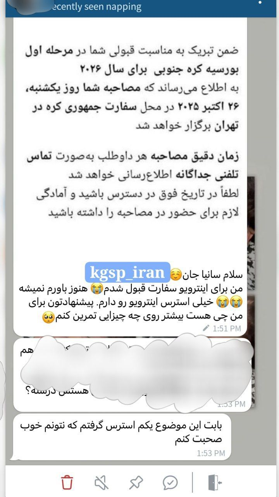

Student Name
Bachelor's Degree | Application Year 2026
South Korean Government Scholarship – Bachelor's Degree – Applied via the Embassy – Regional Program

• One of this year's acceptance results from my consultations •
Wishing the best of luck to our wonderful friend and to everyone else who passed the document screening and made it to the interview stage 🍓
These students have so far only passed the screening for the interview. The final Round 1 results and the submission of names to NIIED happen after the interview and are based on each applicant's performance in it. 🫶🏻🪷
🎯 I will introduce the rest of my consultation results, whether for applications through the embassy or through the destination university, at the final stage and with the consent of each person ☺️ I'm very happy that you trusted me and asked for my help for another year.
#gks #gksu2026 #accepted